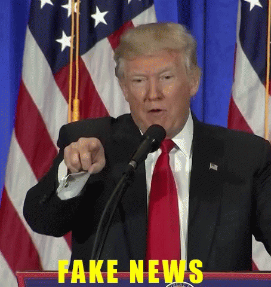

Welcome to TruthGuard AI, your trusted ally in the battle against misinformation! Our cutting-edge website harnesses the power of artificial intelligence to provide you with accurate and reliable results when it comes to identifying fake news.
With the rapid spread of false information on the internet, it's becoming increasingly challenging to separate fact from fiction. That's where TruthGuard AI steps in.
Our sophisticated AI algorithms have been trained on vast datasets of credible and deceptive news articles to develop a keen understanding of the telltale signs of misinformation.
